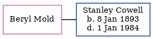

Beryl L Cowell (née Mold)
[ Home ] | [ Calendar ] | [ Surnames Index ] | [ Errors ] | [ Family History ]Beryl Mold, the wife of Stanley George Cowell (the third cousin twice-removed on the mother's side of Nigel Horne), and married Stanley (a cutter's pupil) in Croydon, Surrey, England around Aug 19631.
Citations
- England & Wales marriages 1837-2008 - Findmypast
Media
England & Wales marriages 1837-2008 Transcription - BMD-M-1963-3-AZ-000260-079
England & Wales marriages 1837-2008 - BMD/M/1963/3/AZ/000869/056
Family Tree
Map
Generated by ged2site. Last updated on Jul 3, 2024